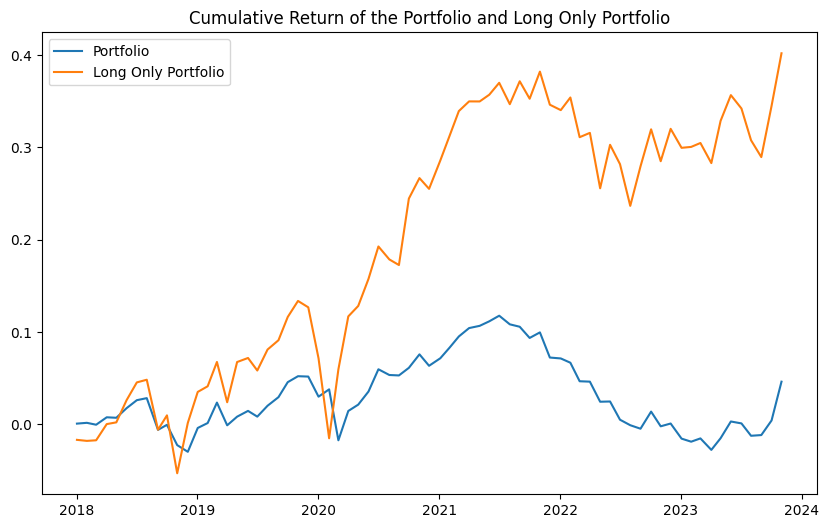

Table of Contents
Strategy Details
Key Components
The strategy builds on two key concepts:
- Lead-Lag Relationships:
- Asymmetry in stock price movements
- Some stocks lead while others lag
- Contemporaneous Co-movements:
- Difference between long-run and short-run relationships
- Distinct from factor momentum
Data Collection
We begin by collecting S&P 500 stock data:
# Collect the list of the S&P 500 companies from Wikipedia and save it to a file
import os
import requests
import pandas as pd
# ignore warnings
import warnings
warnings.filterwarnings("ignore")
# Get the list of S&P 500 companies from Wikipedia
url = 'https://en.wikipedia.org/wiki/List_of_S%26P_500_companies'
response = requests.get(url)
html = response.content
df = pd.read_html(html, header=0)[0]
tickers = df['Symbol'].tolist()
# Load the data from yahoo finance
import os
import yfinance as yf
def load_data(symbol):
direc = 'data/'
os.makedirs(direc, exist_ok=True)
file_name = os.path.join(direc, symbol + '.csv')
if not os.path.exists(file_name):
ticker = yf.Ticker(symbol)
df = ticker.history(start='2005-01-01', end='2023-12-31')
df.to_csv(file_name)
df = pd.read_csv(file_name, index_col=0)
df.index = pd.to_datetime(df.index, utc=True).tz_convert('US/Eastern')
df['date'] = df.index
if len(df) == 0:
os.remove(file_name)
return None
return df
holder = []
ticker_with_data = []
for symbol in tickers:
df = load_data(symbol)
if df is not None:
holder.append(df)
ticker_with_data.append(symbol)
tickers = ticker_with_data[:]
print(f'Loaded data for {len(tickers)} companies')
Conclusion
Key Findings
- Cross-stock momentum shows distinct characteristics from factor momentum
- Lead-lag relationships provide valuable predictive signals
- Strategy performance varies significantly with implementation choices
Monthly Data Aggregation
In this section, we aggregate the daily price data into monthly intervals. This transformation is crucial for our momentum strategy as it allows us to:
- Calculate monthly returns for momentum signals
- Determine entry and exit points at monthly intervals
- Analyze the strategy's performance on a monthly basis
Data Processing Steps
The aggregation process involves:
- Monthly Resampling:
- Open price: First day of the month
- Close price: Last day of the month
- High price: Maximum value of the month
- Low price: Minimum value of the month
- Volume: Sum of daily volumes
- Return Calculations:
- Monthly returns using close prices
- Intra-month returns (Open to Close)
- Next month's intra-month returns
- Cumulative returns for momentum signals
# We only need the monthly data, so we will resample the data,
# Open should be the first day of the month, Close should be the last day of the month
# High should be the maximum value of the month, Low should be the minimum value of the month
monthly_data = []
for data in holder:
df = data.resample('M').agg({
'date': 'first',
'Open': 'first',
'High': 'max',
'Low': 'min',
'Close': 'last',
'Volume': 'sum'
})
df.set_index('date', inplace=True)
monthly_data.append(df)
del holder
temp = []
for df in monthly_data:
# Compute the monthly return
df['monthly_return'] = df['Close'].pct_change()
df['intra_month_return'] = (df['Close'] - df['Open']) / df['Open']
df['next_intra_month_return'] = df['intra_month_return'].shift(-1)
# Compute the cumulative return
df['last_1_month_cumulative_return'] = (1 + df['monthly_return']).cumprod() - 1
df['last_1_month_cumulative_return'] = df['last_1_month_cumulative_return'].shift(1)
df['last_2_month_cumulative_return'] = df['last_1_month_cumulative_return'].shift(1)
temp.append(df)
monthly_data = temp
monthly_data[0].head(3)
Code Explanation
This code section implements the monthly data aggregation:
- Data Resampling:
- Uses pandas resample function with 'M' frequency
- Aggregates price data using appropriate methods
- Sets date as the index for time series analysis
- Return Calculations:
- Computes monthly returns using close prices
- Calculates intra-month returns (Open to Close)
- Shifts returns for next month prediction
- Computes cumulative returns for momentum signals
date Open High Low Close Volume monthly_return intra_month_return next_intra_month_return last_1_month_cumulative_return last_2_month_cumulative_return
2005-01-03 00:00:00-05:00 38.470288 40.029334 37.796131 39.495602 88466685 NaN 0.026652 0.000136 NaN NaN
2005-02-01 00:00:00-05:00 39.490942 40.722237 38.835480 39.496304 57967609 0.000018 0.000136 0.020727 NaN NaN
2005-03-01 00:00:00-05:00 39.501021 41.147879 39.298711 40.319744 66145137 0.020849 0.020727 -0.110814 0.000018 NaN
Regression Analysis
According to the research paper, we use the cumulative returns to calculate the cross-stock momentum. The cross-stock momentum is calculated by the correlation of the last 1 month cumulative return of stock1 and the last 2 month cumulative return of stock2.
Data Preparation
This code section prepares the data for regression analysis:
- Data Organization:
- Creates separate holders for 1-month and 2-month cumulative returns
- Preserves stock symbols as column names
- Maintains temporal alignment of return series
- Data Transformation:
- Concatenates individual stock return series into DataFrames
- Ensures proper alignment of dates across all stocks
- Preserves the hierarchical structure of the data
# Transfer all the data to a single dataframe
last_1_month_cumulative_return_holder = []
last_2_month_cumulative_return_holder = []
for symbol, df in zip(tickers, monthly_data):
last_1_month_cumulative_return_series = df['last_1_month_cumulative_return'].copy().dropna()
last_2_month_cumulative_return_series = df['last_2_month_cumulative_return'].copy().dropna()
last_1_month_cumulative_return_series.name = symbol
last_2_month_cumulative_return_series.name = symbol
last_1_month_cumulative_return_holder.append(last_1_month_cumulative_return_series)
last_2_month_cumulative_return_holder.append(last_2_month_cumulative_return_series)
last_1_month_cumulative_return_df = pd.concat(last_1_month_cumulative_return_holder, axis=1)
last_2_month_cumulative_return_df = pd.concat(last_2_month_cumulative_return_holder, axis=1)
print(last_1_month_cumulative_return_df.iloc[0:3, 0:3])
print(last_2_month_cumulative_return_df.iloc[0:3, 0:3])
Data Preview
The output shows the first three rows and columns of both DataFrames:
- 1-Month Cumulative Returns:
- Shows returns for MMM, AOS, and ABT
- Displays data from March to May 2005
- Includes timezone information in the index
- 2-Month Cumulative Returns:
- Shows similar structure for longer-term returns
- Maintains consistent date alignment
- Preserves the same stock symbols
MMM AOS ABT
date
2005-03-01 00:00:00-05:00 0.000018 -0.030616 0.021546
2005-04-01 00:00:00-05:00 0.020867 0.064921 0.035540
2005-05-02 00:00:00-04:00 -0.088976 0.057225 0.098264
MMM AOS ABT
date
2005-04-01 00:00:00-05:00 0.000018 -0.030616 0.021546
2005-05-02 00:00:00-04:00 0.020867 0.064921 0.035540
2005-06-01 00:00:00-04:00 -0.088976 0.057225 0.098264
[2183 rows x 8 columns]
Building the Correlation Matrix
In this section, we construct a correlation matrix to identify lead-lag relationships between stocks. This analysis is crucial for understanding how different stocks influence each other's price movements over time.
Methodology
Our analysis focuses on two key relationships for each stock pair:
- Return Components:
- r_t-1_i: Cumulative return of stock i until month(t-1)
- r_t_j: Cumulative return of stock j until month(t)
- Lead-Lag Determination:
- Corr(r_t-1_i, r_t_j): Stock i's past returns vs stock j's current returns
- Corr(r_t_i, r_t-1_j): Stock j's past returns vs stock i's current returns
correlation_holder = []
for ticker in tickers:
temp_df = pd.DataFrame()
temp_df[ticker] = last_1_month_cumulative_return_df[ticker]
# duplicate the column to the number of tickers so that we can use corrwith later on
temp_df = pd.concat([temp_df] * len(tickers), axis=1)
# Change the name of the column to the ticker
temp_df.columns = tickers
# Calculate the correlation using corrwith
correlation_series = temp_df.corrwith(last_2_month_cumulative_return_df, axis=0)
# Set the correlation_series to the correlation_df as the column
correlation_holder.append(correlation_series)
correlation_df = pd.concat(correlation_holder, axis=1)
correlation_df.columns = tickers
# Transpose the correlation_df
correlation_df_T = correlation_df.T
correlation_df_T.head(3)
Correlation Matrix Analysis
The correlation matrices provide different perspectives on stock relationships:
- Matrix Components:
- correlation_df: Current returns vs past returns
- correlation_df_T: Past returns vs current returns
- Lead-Lag Identification:
- Positive difference: Stock follows another
- Negative difference: Stock leads another
# Get the difference between the correlation_df and correlation_df_T, so that we can know the lead-lag linkage between the companies
correlation_diff = correlation_df_T - correlation_df
# Get the pair of stocks that have the highest correlation difference
correlation_diff_selected_pairs = correlation_diff.stack()
correlation_diff_selected_pairs = correlation_diff_selected_pairs[correlation_diff_selected_pairs > 0.1]
# Save the pairs and the correlation into a holder
pairs = {}
for symbol in tickers:
pairs[symbol] = []
for pair in correlation_diff_selected_pairs.index:
# Get the left and right pair
left, right = pair
pairs[left].append([right, correlation_diff_selected_pairs[pair]])
# Sort the pairs based on the correlation difference so that we can select the stock with the highest correlation difference
for symbol in tickers:
pairs[symbol] = sorted(pairs[symbol], key=lambda x: x[1], reverse=True)
# Add the intra_month_return for the leader stocks to the monthly_data of the lagged stocks
for ticker in tickers:
if len(pairs[ticker]) > 0:
monthly_data[tickers.index(ticker)]['intra_month_return' + pairs[ticker][0][0]] = monthly_data[tickers.index(pairs[ticker][0][0])]['intra_month_return']
# Build the regression analysis
regression_data = []
for ticker in tickers:
if len(pairs[ticker]) > 0:
df = pd.DataFrame()
df['y'] = monthly_data[tickers.index(ticker)]['next_intra_month_return']
df['intra_month_retrun'+pairs[ticker][0][0]] = monthly_data[tickers.index(ticker)]['intra_month_return'+pairs[ticker][0][0]]
regression_data.append(df)
Regression Model Implementation
We implement a linear regression model to analyze the relationship between leader stocks and their followers:
- Model Setup:
- Uses OLS regression from statsmodels
- Includes constant term for intercept
- Handles missing values appropriately
- Data Preparation:
- Aligns leader stock returns with follower returns
- Maintains temporal consistency
- Preserves stock pair relationships
import statsmodels.api as sm
from statsmodels.regression.linear_model import OLS
import numpy as np
regression_holder_leader_stock = []
regression_holder_y = []
for df in regression_data:
df.dropna(inplace=True)
# X is the second column
X_leader_stock = df.iloc[:, 1:2]
# Set the index of X to be the number of the row
X_leader_stock.index = np.arange(len(X_leader_stock))
# Set the column name to be "CORR"
X_leader_stock.columns = ['Leader Stock Intra Month Return']
y = df['y']
# Set the index of y to be the number of the row
y.index = np.arange(len(y))
regression_holder_leader_stock.append(X_leader_stock)
regression_holder_y.append(y)
regression_df = pd.DataFrame()
# Concatenate all the X and y vertically
regression_df_leader_stock = pd.concat(regression_holder_leader_stock,ignore_index=True)
regression_df_y = pd.concat(regression_holder_y,ignore_index=True)
regression_df = pd.concat([regression_df_leader_stock, regression_df_y], axis=1)
# Fit the regression model for y and CORR
X = sm.add_constant(regression_df['Leader Stock Intra Month Return'])
model = OLS(regression_df['y'], X)
result_corr = model.fit()
print(result_corr.summary())
Analysis Results
The regression analysis reveals several key findings:
- Lead-Lag Relationship:
- Coefficient of leader stock intra-month return: 0.074
- P-value: 0.451 (statistically insignificant)
- Nearly half of lagged stocks don't follow leader trends
- Potential Limitations:
- Smaller sample size (2005-2020)
- Data-driven approach may deviate from theoretical cross-stock momentum
- Possible implementation issues in the code
OLS Regression Results
==============================================================================
Dep. Variable: y R-squared: 0.000
Model: OLS Adj. R-squared: -0.000
Method: Least Squares F-statistic: 0.5690
Date: Mon, 22 Jul 2024 Prob (F-statistic): 0.451
Time: 10:45:48 Log-Likelihood: 7124.2
No. Observations: 7082 AIC: -1.424e+04
Df Residuals: 7080 BIC: -1.423e+04
Df Model: 1
Covariance Type: nonrobust
===================================================================================================
coef std err t P>|t| [0.025 0.975]
---------------------------------------------------------------------------------------------------
const 0.0103 0.001 9.741 0.000 0.008 0.012
Leader Stock Intra Month Return 0.0074 0.010 0.754 0.451 -0.012 0.027
==============================================================================
Omnibus: 308.419 Durbin-Watson: 2.021
Prob(Omnibus): 0.000 Jarque-Bera (JB): 960.189
Skew: 0.123 Prob(JB): 3.14e-209
Kurtosis: 4.787 Cond. No. 9.37
==============================================================================
Notes:
[1] Standard Errors assume that the covariance matrix of the errors is correctly specified.
Cross-stock Momentum Strategy using data-driven linkages
We first used the stock data from 2005-2017 to identify the leader stocks and the laggard stocks. After determining the leader stocks for each laggard stock, we used the data from 2005-2017 to build multi-variable regression models. The independent variables in these models were the intra-month returns of the leader stocks, and the dependent variable was the next intra-month return of the corresponding laggard stock.
Next, we used these regression models to predict the next intra-month returns of the laggard stocks based on the intra-month returns of the leader stocks from 2018 - 2023.
# Get the stock price from 2005-2017 and stock price from 2018-2023
last_1_month_cumulative_return_df_2005_2017 = last_1_month_cumulative_return_df.loc['2005-01-01':'2017-12-31']
last_1_month_cumulative_return_df_2018_2023 = last_1_month_cumulative_return_df.loc['2018-01-01':'2023-12-31']
last_2_month_cumulative_return_df_2005_2017 = last_2_month_cumulative_return_df.loc['2005-01-01':'2017-12-31']
last_2_month_cumulative_return_df_2018_2023 = last_2_month_cumulative_return_df.loc['2018-01-01':'2023-12-31']
# Get the dataframe containing the next month return from 2005-2017 and 2018-2023
next_intra_month_return_holder = []
intra_month_return_holder = []
for symbol,df in zip(tickers, monthly_data):
next_intra_month_return_series = df['next_intra_month_return'].copy().dropna()
next_intra_month_return_series.name = symbol
intra_month_return_series = df['intra_month_return'].copy().dropna()
intra_month_return_series.name = symbol
next_intra_month_return_holder.append(next_intra_month_return_series)
intra_month_return_holder.append(intra_month_return_series)
next_intra_month_return_df = pd.concat(next_intra_month_return_holder, axis=1)
intra_month_return_df = pd.concat(intra_month_return_holder, axis=1)
next_intra_month_return_df_2005_2017 = next_intra_month_return_df.loc['2005-01-01':'2017-12-31']
next_intra_month_return_df_2018_2023 = next_intra_month_return_df.loc['2018-01-01':'2023-12-31']
intra_month_return_df_2005_2017 = intra_month_return_df.loc['2005-01-01':'2017-12-31']
intra_month_return_df_2018_2023 = intra_month_return_df.loc['2018-01-01':'2023-12-31']
# Build the correlation matrix for the stock price from 2005-2017
correlation_holder_2005_2017 = []
for ticker in tickers:
temp_df = pd.DataFrame()
temp_df[ticker] = last_1_month_cumulative_return_df_2005_2017[ticker]
# duplicate the column to the number of tickers
temp_df = pd.concat([temp_df] * len(tickers), axis=1)
# Change the name of the column to the ticker
#print(ticker)
temp_df.columns = tickers
# Calculate the correlation
correlation_series = temp_df.corrwith(last_2_month_cumulative_return_df_2005_2017, axis=0)
# Set the correlation_series to the correlation_df as the column
correlation_holder_2005_2017.append(correlation_series)
correlation_df_2005_2017 = pd.concat(correlation_holder_2005_2017, axis=1)
correlation_df_2005_2017.columns = tickers
# Transpose the correlation_df
correlation_df_T_2005_2017 = correlation_df_2005_2017.T
# Get the difference between the correlation_df and correlation_df_T, so that we can know the lead-lag linkage betwe
correlation_diff_2005_2017 = correlation_df_T_2005_2017 - correlation_df_2005_2017
# Get the pair of stocks that have lead-lag linkage and store the paris into a holder
# Get the pair of stocks that have the highest correlation difference
correlation_diff_selected_pairs_2005_2017 = correlation_diff_2005_2017.stack()
correlation_diff_selected_pairs_2005_2017 = correlation_diff_selected_pairs_2005_2017[correlation_diff_selected_pairs_2005_2017 > 0.1]
linkage_2005_2017 = {}
for symbol in tickers:
linkage_2005_2017[symbol] = []
for pair in correlation_diff_selected_pairs_2005_2017.index:
# Get the left and right pair
left, right = pair
#print(left, right, correlation_diff_selected_pairs_2005_2017[pair])
linkage_2005_2017[left].append([right, correlation_diff_selected_pairs_2005_2017[pair]])
# Sort the pairs based on the correlation difference
for symbol in tickers:
linkage_2005_2017[symbol] = sorted(linkage_2005_2017[symbol], key=lambda x: x[1], reverse=True)
# Build the multi-regression model for each lagged stock and get the coefficients
regression_model_2005_2017 = {}
for ticker in tickers:
if len(linkage_2005_2017[ticker]) > 0:
df = pd.DataFrame()
df['y'] = next_intra_month_return_df_2005_2017[ticker]
for i in range(len(linkage_2005_2017[ticker])):
df['intra_month_return '+linkage_2005_2017[ticker][i][0]] = intra_month_return_df_2005_2017[linkage_2005_2017[ticker][i][0]]
df.dropna(inplace=True)
X = sm.add_constant(df.iloc[:, 1:])
model = OLS(df['y'], X)
result = model.fit()
regression_model_2005_2017[ticker] = result.params
# Create a new dataframe that stores the returns from 2018-2023 of the laggard stocks and the returns of the leader stocks
prediction_matrix_2018_2023_holder = []
for data in monthly_data:
df = data.loc['2018-01-01':'2023-12-31'].copy()
# keep the intra_month_return and next_intra_month_return only
df = df[['intra_month_return', 'next_intra_month_return']]
prediction_matrix_2018_2023_holder.append(df)
temp = []
for ticker in tickers:
if len(linkage_2005_2017[ticker]) > 0:
df = prediction_matrix_2018_2023_holder[tickers.index(ticker)].copy()
for leader_stock in linkage_2005_2017[ticker]:
df['intra_month_return' + leader_stock[0]] = prediction_matrix_2018_2023_holder[tickers.index(leader_stock[0])]['intra_month_return']
#df['predicted_next_month_return'] = sum([df['intra_month_return' + pair[0]] for pair in linkage_2005_2017[ticker]]) / len(linkage_2005_2017[ticker])
# Based on the regression model, we can predict the next month return
df['predicted_next_month_return'] = sum([df['intra_month_return' + pair[0]] * regression_model_2005_2017[ticker]['intra_month_return '+pair[0]] for pair in linkage_2005_2017[ticker]]) + regression_model_2005_2017[ticker]['const']
temp.append(df)
prediction_matrix_2018_2023_holder = temp
Code Explanation
This code section implements the core strategy components:
- Data Preparation:
- Splits data into training (2005-2017) and testing (2018-2023) periods
- Creates separate dataframes for different return metrics
- Handles missing values appropriately
- Correlation Analysis:
- Builds correlation matrices for stock relationships
- Identifies lead-lag relationships between stocks
- Filters pairs with significant correlation differences
- Model Construction:
- Builds multi-variable regression models for each stock
- Uses leader stock returns as predictors
- Stores model coefficients for prediction
- Prediction Framework:
- Creates prediction matrices for testing period
- Implements regression-based predictions
- Combines leader stock returns with model coefficients
Long & Short Strategy
This section implements a long-short strategy based on the predicted returns from our cross-stock momentum model. The strategy takes long positions in stocks with positive predicted returns and short positions in stocks with negative predicted returns, creating an equal-weighted portfolio.
for df in prediction_matrix_2018_2023_holder:
# Build the trading signal based on the predicted_next_month_return
df['signal'] = np.where(df['predicted_next_month_return'] > 0, 1, -1)
# Build the trading return
df['next_intra_month_trading_return'] = df['signal'] * df['next_intra_month_return']
# Convert the trading return to dataframe
trading_return_holder = []
for ticker, df in zip(tickers,prediction_matrix_2018_2023_holder):
trading_return = df['next_intra_month_trading_return'].copy()
trading_return.name = ticker
trading_return_holder.append(trading_return)
trading_return_df = pd.concat(trading_return_holder, axis=1)
# Build an equal weighted portfolio
portfolio = trading_return_df.mean(axis=1)
portfolio_cumulative_return = portfolio.cumsum()
# Get the cumulative return of each stocks from 2018-2023 and store it to a list
cumulative_return_2018_2023 = []
for df in prediction_matrix_2018_2023_holder:
df['cumulative_return'] = df['next_intra_month_trading_return'].cumsum()
cumulative_return_2018_2023.append(df['cumulative_return'].iloc[-2])
Code Explanation
This code section implements the long-short strategy:
- Signal Generation:
- Creates binary signals based on predicted returns
- Long (1) for positive predictions
- Short (-1) for negative predictions
- Return Calculation:
- Multiplies signals by actual returns
- Aggregates returns across all stocks
- Calculates equal-weighted portfolio returns
- Performance Tracking:
- Computes cumulative returns for portfolio
- Tracks individual stock performance
- Stores final cumulative returns
Long-Only Strategy Implementation
In this section, we implement a long-only version of the strategy that takes positions only when the predicted next month return is positive. This approach allows us to evaluate the strategy's performance without short positions, which may be more practical for many investors.
for df in prediction_matrix_2018_2023_holder:
# Build the trading signal based on the predicted_next_month_return
df['signal_long_only'] = np.where(df['predicted_next_month_return'] > 0, 1, 0)
# Build the trading return
df['trading_return_long_only'] = df['signal_long_only'] * df['next_intra_month_return']
# Convert the trading return to dataframe
long_only_trading_return_holder = []
for ticker, df in zip(tickers, prediction_matrix_2018_2023_holder):
long_only_trading_return = df['trading_return_long_only']
long_only_trading_return.name = ticker
long_only_trading_return_holder.append(long_only_trading_return)
long_only_trading_return_df = pd.concat(long_only_trading_return_holder, axis=1)
# Build an equal weighted portfolio
portfolio_long_only = long_only_trading_return_df.mean(axis=1)
portfolio_cumulative_return_long_only = portfolio_long_only.cumsum()
# Calculate the cumulative return of each stocks from 2018-2023
cumulative_return_2018_2023_long_only = []
for df in prediction_matrix_2018_2023_holder:
df['cumulative_return_long_only'] = df['trading_return_long_only'].cumsum()
cumulative_return_2018_2023_long_only.append(df['cumulative_return_long_only'].iloc[-2])
Code Explanation
This code section implements the long-only strategy:
- Signal Generation:
- Creates binary signals based on predicted returns
- Takes long positions when predictions are positive
- Calculates trading returns using the signals
- Portfolio Construction:
- Combines individual stock returns into a portfolio
- Implements equal-weighted allocation
- Calculates cumulative portfolio returns
- Performance Tracking:
- Computes cumulative returns for each stock
- Tracks performance from 2018-2023
- Stores final cumulative returns for analysis
Results
We analyze the performance of both the long-short portfolio and the long-only portfolio using various metrics including Sharpe ratio, Value at Risk (VaR), and cumulative returns.
# Calculate the sharpe ratio of these 2 portfolios
# change a new row to print the sharpe ratio of the long only portfolio
sharpe_ratio = portfolio.mean() / portfolio.std() * np.sqrt(12)
sharpe_ratio_long_only = portfolio_long_only.mean() / portfolio_long_only.std() * np.sqrt(12)
print(f'Sharpe ratio of the portfolio is {sharpe_ratio}')
print(f'Sharpe ratio of the long only portfolio is {sharpe_ratio_long_only}')
# Calculate the VaR of these 2 portfolios
VaR_95 = portfolio.quantile(0.05)
VaR_95_long_only = portfolio_long_only.quantile(0.05)
print(f'VaR of the portfolio is {VaR_95}')
print(f'VaR of the long only portfolio is {VaR_95_long_only}')
# Calculate the Annualized Return of these 2 portfolios
Annualized_Return = portfolio.mean() * 12
Annualized_Return_long_only = portfolio_long_only.mean() * 12
print(f'Annualized Return of the portfolio is {Annualized_Return}')
print(f'Annualized Return of the long only portfolio is {Annualized_Return_long_only}')
# Calculate the total return of these 2 portfolios
Total_Return = portfolio_cumulative_return.iloc[-2]
Total_Return_long_only = portfolio_cumulative_return_long_only.iloc[-2]
print(f'Total Return of the portfolio is {Total_Return}')
print(f'Total Return of the long only portfolio is {Total_Return_long_only}')
Sharpe ratio of the portfolio is 0.14498782627989942
Sharpe ratio of the long only portfolio is 0.5839208750898852
VaR of the portfolio is -0.023312011917653884
VaR of the long only portfolio is -0.05469331370426407
Annualized Return of the portfolio is 0.007816898216297193
Annualized Return of the long only portfolio is 0.06794874005856556
Total Return of the portfolio is 0.046249981113091726
Total Return of the long only portfolio is 0.4020300453465132
# Draw the line chart of the cumulative return of the portfolio and the long only portfolio
import matplotlib.pyplot as plt
plt.figure(figsize=(10, 6))
plt.plot(portfolio_cumulative_return, label='Portfolio')
plt.plot(portfolio_cumulative_return_long_only, label='Long Only Portfolio')
plt.legend()
plt.title('Cumulative Return of the Portfolio and Long Only Portfolio')
plt.show()

Performance Analysis
The results reveal several key insights:
- Portfolio Performance:
- Long-only portfolio shows superior Sharpe ratio (0.584) compared to long-short portfolio (0.145)
- Long-only strategy achieves higher annualized returns (6.79%) vs long-short strategy (0.78%)
- Total return significantly favors long-only approach (40.20% vs 4.62%)
- Risk Metrics:
- Long-short portfolio shows better VaR (-2.33% vs -5.47%)
- Long-only strategy exhibits higher volatility but better risk-adjusted returns
Key Findings
The analysis suggests that:
- Market Bias:
- Stock market exhibits strong upward bias over time
- Long positions generally outperform short positions
- Model Limitations:
- Regression models struggle with predicting negative returns
- Short-selling predictions show lower accuracy
Limitations and Further Improvements
Several areas for enhancement have been identified:
- Model Enhancements:
- Explore non-linear regression techniques
- Implement ensemble methods (random forests, boosting)
- Consider neural network approaches
- Stock Selection:
- Improve leader stock selection methodology
- Develop more sophisticated correlation filters
- Consider market cap relationships
- Market Coverage:
- Extend analysis beyond S&P 500
- Explore large-cap vs small-cap relationships
- Investigate cross-market influences